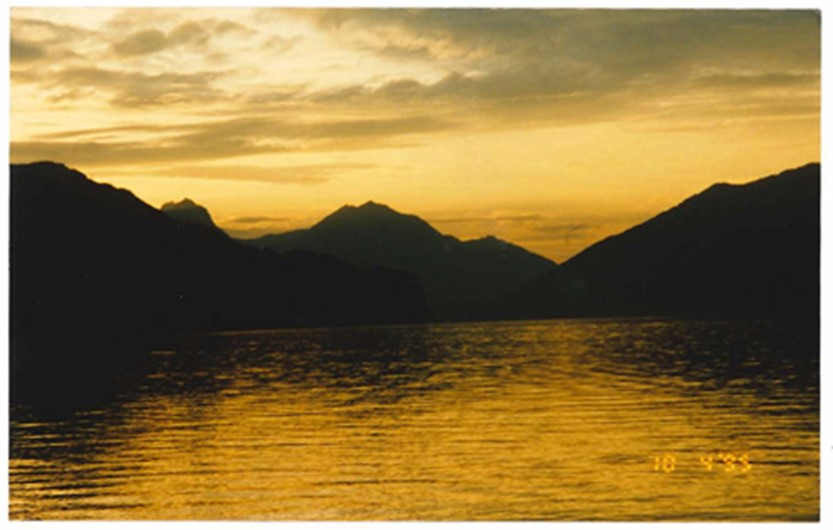

One hobby I truly enjoy is taking digital photos with my phone. I don't know a lot about photography and hope to take a photography class in the future. In the meantime though I am always on the look out for photo opportunities. Digital photography has opened up a new world for me since it's invention. I learned how to take photos using 35mm cameras and film. It could be hit or miss with this form of photography because you never knew how your photo would turn out until you had your film processed. I love the fact that I will know instantaneously if the photo turned out how I wanted and expected. Below is a list of some photography websites that I found to be interesting. The first photo is a photo I took in Switzerland with a 35mm camera many years ago. Thankfully the photo turned out but I did not know this until after the film had been processed. I would love to go back there someday and see how taking that shot again with a digital camera would turn out. The rest of the photos have been taken with my phone in a digital format
35mm Photo 